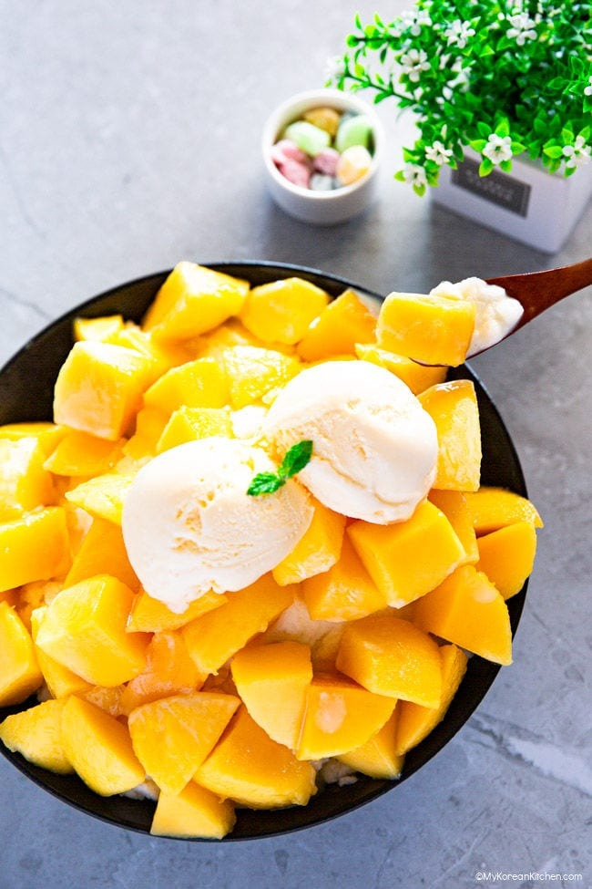

Mango Bingsoo

"Mango bingsu", also pronounced as "mango bingsoo" (망고빙수), is a popular Korean dessert. It is mango shaved ice, which is essentially a fruity twist on the traditional Korean dessert, Patbingsu.
It is typically served in a large bowl, and the dessert starts with a generous mound of shaved ice, which is then topped with a glorious heap of juicy, ripe mango pieces. To add more texture and flavor, it is commonly enjoyed with a variety of additional toppings (e.g. vanilla ice cream, mochi, and cheesecake pieces) that enhance its already delightful taste.
Ingredients
Main Ingredients
- 1 3/4 cup whole milk
- 1/3 cup water
- 1/3 cup sweetened condensed milk
- 3 large mangoes (1.3kg / 2.9 pounds), chilled - The weight of a mango includes the seed.
- 2 Tbsp raw sugar
- 1 Tbsp lemon juice
Toppings
- sweetened condensed milk, to taste
- 2 scoops of vanilla ice cream
- (optional) mini mochi (sweet rice cakes)
- (optional) Philadelphia cheesecake cubes
Steps
- Prepare a large jug. Combine milk, water, and sweetened condensed milk in the jug. Stir the mixture thoroughly until the condensed milk is fully incorporated and evenly distributed.
- Gather a large zip-lock plastic bag or an ice cube tray. (Ensure you have a food processor, powerful blender, or shaved ice machine if you are using an ice cube tray to freeze the ingredients.) Carefully pour the milk mixture from step 1. into your chosen container - either the zip-lock bag or the ice cube tray. For optimal freezing, leave the mixture in the freezer for a minimum of six hours. When using a zip-lock plastic bag, make sure to lay it flat while freezing. Doing so will make it easier to break the ice later.
- Carefully dice the mangos into small, even-sized pieces. Place the visually appealing diced mangoes in a medium-sized bowl. These will later serve as a delightful topping for your bingsu. Cover the bowl and refrigerate to keep them fresh.
- Gather the remaining smaller and less attractive mango pieces (approximately 300g / 10.5 ounces) and place them in a blender. Blend until they reach a smooth, puree-like consistency: this puree will be used to glaze over your bingsu at the end.
- Prepare a saucepan and add the mango puree, raw sugar, and lemon juice. Gently cook the mixture over low heat for 1-2 minutes, stirring occasionally, until the sugar has fully dissolved. Once ready, transfer the syrup to the refrigerator to cool and let the flavors blend together.
- Prepare shaved ice/crushed ice by taking out the zip-lock plastic bag from the freezer and breaking up the ice inside it using a pestle, rolling pin, or your hands. This will help to create a shaved ice effect for the bingsu.
- Alternatively, if you have frozen the ice mixture in ice cubes in step 2, remove them from the freezer and place them in a food processor or shaved ice machine. Next, grind the ice for a few seconds in the processor or shaved ice machine, until it reaches your desired level of fineness. Whether you prefer a fine, snow-like consistency or a coarser texture, the key is to pulse the ice in short bursts to prevent it from melting or clumping together.
- Prepare all the necessary ingredients for assembling and place them nearby. Then, layer the ingredients in the following order in a serving bowl: Begin by placing half of the milk shaved ice made in step 5 at the bottom of the bowl.
- On top of the ice, sprinkle a bit of mini mochi (if desired), followed by a drizzle of sweetened condensed milk and mango syrup prepared in step 4. Repeat these layers with the remaining ingredients until you reach the top of the bowl.
- Finally, add a generous amount of diced fresh mango (prepared in step 3) and any other toppings you desire, such as ice cream or cheesecake cubes. Then, glaze around with mango syrup and sweetened condensed milk to add more sweetness and creaminess. Serve immediately and enjoy!
Back to recipes
Credit to My Korean Kitchen for the recipe.